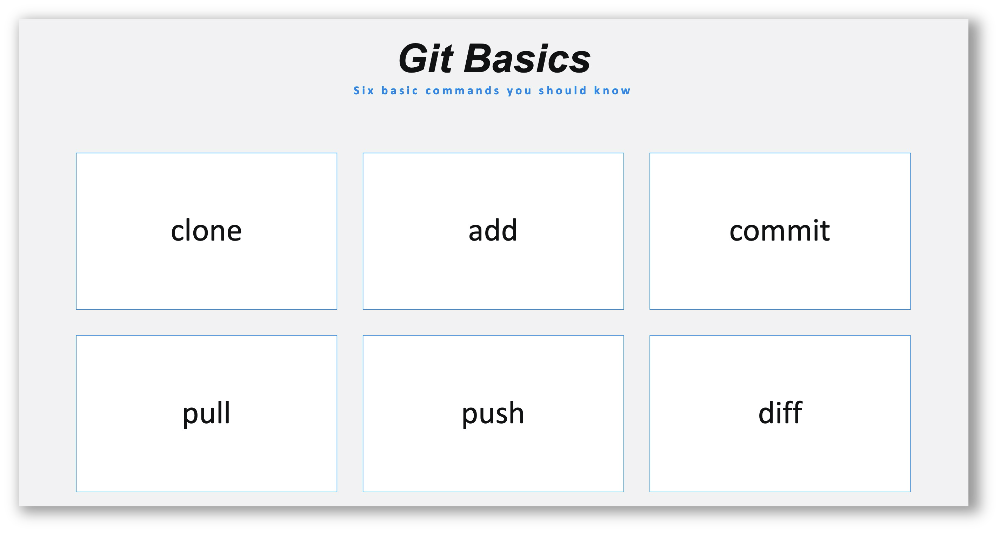
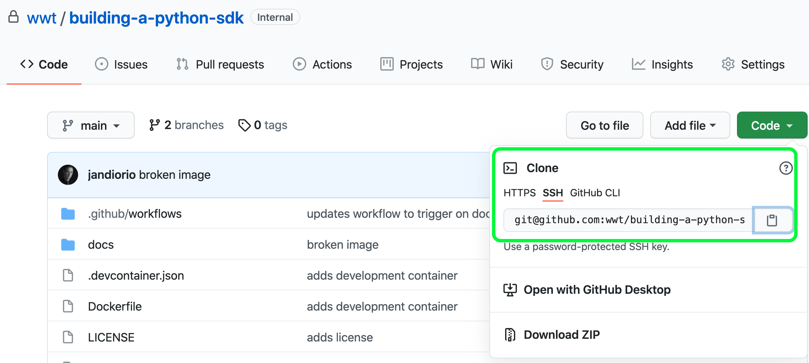

Getting Setup
As with any development project there are some initial setup steps that are required to get things rolling. In the case of this walk-through, the repository already exists as a starting point. The section walks you through the process of cloning that repository down to your local machine, activating the development environment, and opening the project in your Integrated Development Environment.
Clone the Repo

One of the very first skills you learn when starting the journey to becoming an automation engineer is version control. This is a key skill in the development/automation lifecycle. There are many, many command line options and details to understand about git but in regular and daily workflow you will find yourself using a subset of them.

Many IDE's provide version control integration that allows you to utilize the UI in order to perform many of these functions. You can chose what method works best for your personal workflow. The steps below show how to clone a repo from a terminal window.
STEPS
STEP 1. NAVIGATE to the repo on GitHub  devasc-building-a-python-sdk
devasc-building-a-python-sdk
STEP 2. CLICK the Code button
STEP 3. SELECT the transport (HTTPS or SSH)
STEP 4. CLICK the Copy icon

STEP 5. OPEN a new Terminal
STEP 6. PASTE git clone plus that string into your Terminal
Example
SSH git clone git@github.com:wwt/devasc-building-a-python-sdk.git
HTTPS git clone https://github.com/wwt/devasc-building-a-python-sdk.git
Important
The command above will clone down the repository creating a subfolder with the name of the repo in the folder where you ran the command.
Development Environment
All code in this walk-through was developed in a Docker container that was created from the Dockerfile included in the repository. Including the Dockerfile in the repository means we can avoid the "...it works on my machine problem..." By using containers and also makes the container definition travel adjacent to the code.
Below will cover using the Docker container for your execution environment. Just click the tab that meets your needs:
STEP 1.OPEN the new Folder in your Integrated Development Environment
If you are running Visual Studio Code as your IDE, and have the Remove Development Extension pack installed (ms-vscode-remote.vscode-remote-extensionpack) you can simply open the root directory of this project, then select Open in Container when prompted (dialog box in the lower right corner).
The repository contains a portable development environment in the form of a Dockerfile, requirements.txt, and .devcontainer.json files.
This special integration with Visual Studio Code simplifies developing in a containerized development environment
If you are not using Visual Studio Code you can still utilize the  Dockerfile packaged with the repository but some manual build and launch steps will be necessary.
Dockerfile packaged with the repository but some manual build and launch steps will be necessary.
- Ensure you are in the root of the
ansible-validate-exampleproject - BUILD the Docker Image
docker image build -t ansible-validate-lab . - RUN the Docker Container
docker container run -itv $PWD:/ansible-validate-example ansible-validate-lab
This repo contains a starting framework from which you will expand to build a Python SDK.
Section Wrap up
In this section, you used your knowledge of version control to clone down a shared repository, initialize the Docker container, and open the project in your preferred editor. These are some of the most fundamental steps in getting started on your shared project.
Next, you'll start the SDK project by creating a Python package. It's OK if you are not experienced with creating a Python package; the following sections will walk you through that process.